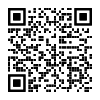

Lifelight® EA
Instructions For Use

Date of Issue: 09 October 2024
IFU Ref: Lifelight EA Vision-RWE IFU
Revision: 1.0
If revised date of revision: 09 October 2024
Change Control Number: CC-2024-001
Name of device: Lifelight® EA Vision-RWE Investigational Device
Name of Associated Medical Device: Lifelight® EA
Trademark: Lifelight®
Manufacturer
XIM Ltd.
University of Southampton Science Park
2 Venture Road
Southampton
Hampshire
United Kingdom
SO16 7NP

(01)05060776720026
(11)240722
(21)LLEA-001
(8012)6.0.0-0
Symbols on the device and documentation
The symbols and labels that appear in this manual and within the application have the following meanings:
| Symbol | Description |
|---|---|
 |
Serial Number. |
Catalogue Number. |
|
Consult Instructions For Use. |
|
 |
Indicates the item is a medical device. |
 |
Date of manufacture. |
Name and address of the manufacturer. |
|
Caution. |
Lifelight® EA Vision-RWE Intended Use / Indications For Use
Exclusively for Clinical Investigation
Lifelight® EA Vision-RWE non-contact medical device software is intended for use as part of a clinical research/investigation (rather than for informational use only) and will also be used for monitoring of the following vital signs:
- non-invasive blood pressure (mmhg),
- pulse rate (bpm),
- and respiration rate (rpm).
Intended patient populations include: adult patients. The medical device software is not intended for paediatric use.
The most likely locations for use are hospitals, clinics, residential care, other healthcare environments and the patient’s home.
The Lifelight® EA Vision-RWE medical device software is to be used either by care providers, or by a patient who has been advised in its appropriate use by a care provider.
Lifelight® EA is indicated for use with patients at rest, during no-motion, in a well-lit environment.
NOTE: Lifelight® EA Vision-RWE Investigational Device is exclusively for clinical investigation. It should not be used for direct diagnosis and is not intended to replace traditional methods of diagnosis or treatment.
Exceptions / Warning:
For the attention of healthcare practitioners:
Some drugs, therapies, health and skin conditions (including cosmetics, facial
tattoos and excessive sweat) may interfere with readings.
If there is any reason to question the accuracy of the results, use other clinically valid methods for verification.
For the attention of patients and/or their carers and care
providers:
Please be aware that vital signs can fluctuate, since they respond to small changes
in the body, and with the time of day. It is unusual for them to remain at exactly
the same value all the time. If you are checking your vital signs regularly, e.g.
blood pressure on different days, you should ideally take readings at the same
time and under the same conditions.
If a reading returns results that seems to be abnormal, but you do not feel unwell, do not panic, as this can happen. Relax and take a break for 5 minutes before checking vital signs again. Low blood pressure (hypotension), high blood pressure (hypertension), the reasons for consistently fast (tachycardia) or consistently slow (bradycardia) heart rate; or for unusual respiratory rates, can only be diagnosed by a qualified healthcare professional. If you have any concerns about your results, please contact your GP surgery or pharmacist.
Ideally, to get the most accurate values, you should wait at least an hour after eating, smoking, caffeine, alcohol, or exercise, as these may affect the results. You should be relaxed and keep still during the reading. Do not use this medical device software if you suffer from atrial or ventricular premature beats or atrial fibrillation.
Terminology
- Reading Quality – is the quality of the data being read by the device camera. It does not refer to the wifi or data connection.
- Operator – the person using Lifelight® EA to check someone else. E.g. a clinician checking a patient.
- Subject – the person being checked. Either by themselves using the app or by another person called the operator in this document.
- Device – the smart phone or tablet running the Lifelight® EA application.
- Medical device software – the Lifelight® EA application running on the device connected to the remote algorithm that returns the results.
Warnings and Statements that can appear in the app
Warning and statements can appear within the app or in this document. When a warning is issued the warning triangle below will be displayed.
The app is safe for patients and clinicians when used in accordance with the instructions and the warning statements presented in these Instructions For Use.
Before using the app, you must familiarize yourself with all warnings to ensure good reading quality and usable readings.
In addition to reviewing the general warnings presented in the next section, you must also review the more specific instructions found in the Preparation and Set-up, Taking a Reading and Maintenance sections.
- Failure to understand and observe any warning statement in this manual could lead to poor reading quality and no readings returned.
Low Reading Quality
Low reading quality, leading to no results returned at the end of the reading, can occur with one or more of the following causes:
Lighting
- The subject (the person being checked) is poorly lit.
- The subject is strongly lit from behind or above and not adequately from in front.
- The background to the subject is very brightly lit.
- A mirror or reflective surface is in the background of the subject.
- There are strong shadows on the subject’s forehead and cheeks.
- The light changes during the reading. Other than flickering lights, this could be caused by people or objects moving in the background.
Movement
- The device is moving too much during the reading. If you can't hold the device still, avoid hand-holding the device and instead use a stand or steady the device against an object.
- The subject may be moving too much such as talking or looking around during the reading. (Blinking and slight movements caused by breathing should not affect reading quality.)
Other
- There is not an adequate wifi or data connection to upload the data.
- The subject does not have their forehead and cheeks visible.
- The device lens is not clean.
What Lifelight® EA does and how it works
Lifelight® EA is a software application that is a medical device. It is intended to be a simple way to estimate pulse, respiration and blood pressure in 40 seconds or less. Through the device camera, the software measures changes in facial skin colour each time the heart beats. When the colour information is processed, the software provides indicative estimates for pulse, respiration and blood pressure.
Preparation and set up of Lifelight® EA before taking a reading.
Device preparation and minimum requirements.
- Lifelight® EA is designed to work on a range of validated mobile devices. Ensure the device’s operating system is up to date.
- Make sure you are using the latest version of the Lifelight® EA app.
- Ensure the device is adequately charged for your requirements.
- Ensure the device lenses are clean.
IT networks characteristics and IT security measures.
- Lifelight® EA requires a stable connection to the internet to function.
- The minimum connection speed required is 0.128 mbps upload and 0.128 mbps download.
- For the software to run as intended, the connection to the Wi-Fi must be secure and protected from unauthorized access.
Keeping the device still.
- The device running Lifelight® EA must be held as still as possible when taking a reading.
- If the device is held in a stand resting on a surface, that surface should be free from movement or vibration.
- Ideal stands allow the device to be repositioned and angled to accommodate the different heights of subjects if used by an operator for multiple subjects.
Environment, lighting and special facilities.
- For optimum Lifelight® EA results, the environment, room or space should be distraction-free and allow the subject’s face to be well illuminated.
- Ideal lighting conditions allow the subject’s face to be well lit without strong shadows. Multiple strong, diffuse light sources are ideal.
- Lifelight® EA may function poorly if the subject’s face is lit from a single strong light source that creates strong shadows across the forehead and cheeks.
- Lifelight® EA may function poorly if the subject is strongly backlit, and/or if the space the subject is in is strongly lit and the subject isn’t.
Subject – the person being checked.
- Lifelight® EA is validated for subjects age 18 and above.
- Lifelight® EA works by measuring skin colour from cheeks and forehead. Therefore these areas of the subject's face must be visible and well illuminated.
- Subjects should remove glasses, hats and heads-carves if they obscure facial skin or create strong shadows.
- Subjects should arrange hair so that their facial skin is exposed and free from strong shadows.
- If it is safe to do so under clinical guidance, remove masks (such as oxygen masks) for the duration of the reading.
- Some subjects are concerned that they are being videoed. Lifelight® EA only uses the images taken with the camera to measure the numeric colour values of facial skin. It is only these numeric colour values that are used to calculate the vital signs. The images are discarded.
- Subjects should avoid food, caffeine, tobacco and alcohol for at least 1 hour before taking a reading.
- Subjects should sit quietly for a few minutes before taking the reading.
- Subjects should be relaxed with their back and feet supported and arms and legs uncrossed.
Taking a Reading
Ensure the preparation and set up steps described previously have been followed.
 Lifelight® EA app icon. Start the application by clicking this icon.
Lifelight® EA app icon. Start the application by clicking this icon.
Enter your biometric information - sex, age and height
- Enter your age, height and sex then press submit
- For height, press cm/ft to change between metric and imperial units.
- Starting the reading won't be possible unless the biometric values are all completed.
- Press X button to clear all values.
Taking a Reading
- Centre your face in the screen and a white rectangle will appear.
- On screen guidance will help you position your face correctly as well as provide guidance on lighting and device motion
- When you are in the right position the Lifelight reading will start
- The reading will take 40 seconds. A circular countdown bar is displayed around the cancel button to indicate how much time the reading has taken.
- Remain still for the duration of the reading.
- You can stop a reading at any time by pressing the cancel button.
Reading Quality Indicators
- During the reading the rectangle surrounding the face will change color.
- Green indicates a high reading quality, amber a medium reading quality and red a low reading quality.
- These are provided by the algorithm that receives data from the app to calculate the vital signs.
- They are primarily affected by the lighting of the subject and environment and the movement of the subject or the device during a reading.
When to retake a reading
You can retake a reading if there is any reason to assume a poor reading has occurred.
It is possible to cancel the reading before the end and restart.
- Retake if the overall reading quality is low (When overall reading quality is low no results will be displayed).
- Retake if the subject moves or talks during the reading.
- Retake if the table or stand is knocked or moved during the reading.
- Retake if the light is interrupted or changes, as might happen if something passes across or light source or lighting is turned on or off.
Other
Maintenance / Frequency
Update software and device operating system when updates become available.
Clean device when necessary.
Serious Incident
Any serious incident that has occurred in relation to the device should be reported to the manufacturer and the competent authority of the Member State in which the user and/or subject is established.
Troubleshooting / Precautions if malfunction
| Situation | Mitigation |
|---|---|
The application freezes. |
Results will not be returned at the end of a reading. Quit and restart the application or host device. |
Unable to use because no data connection or wi-fi signal. |
Find or wait for signal and restart. Or use alternative conventional methods. |
Camera not giving clear image due to dirt or condensation. |
Clean the lens. |
Mains recharging not available. |
Have backup power pack available to recharge the device. |
Camera not giving clear image due to dirt or condensation. |
Use alternative conventional methods. |
Before using this product, the healthcare provider should study carefully the indications, intended use, recommendations, warnings and instructions, as well as the available product-specific information. Xim Ltd is not liable for problems arising from the use of the device outside of its indicated uses and similar matters outside the control of xim Ltd.
Information provided in this Instructions for Use is intended for care providers, or by a patient who has been advised in its appropriate use by a care provider..
For any question or further information on this instructions for use, please make contact via www.lifelight.ai
ARAZY GROUP [IRELAND] LIMITED
19 Baggot Street Lower,
Dublin 2
D02 X658
Ireland
ireland@arazygroup.com